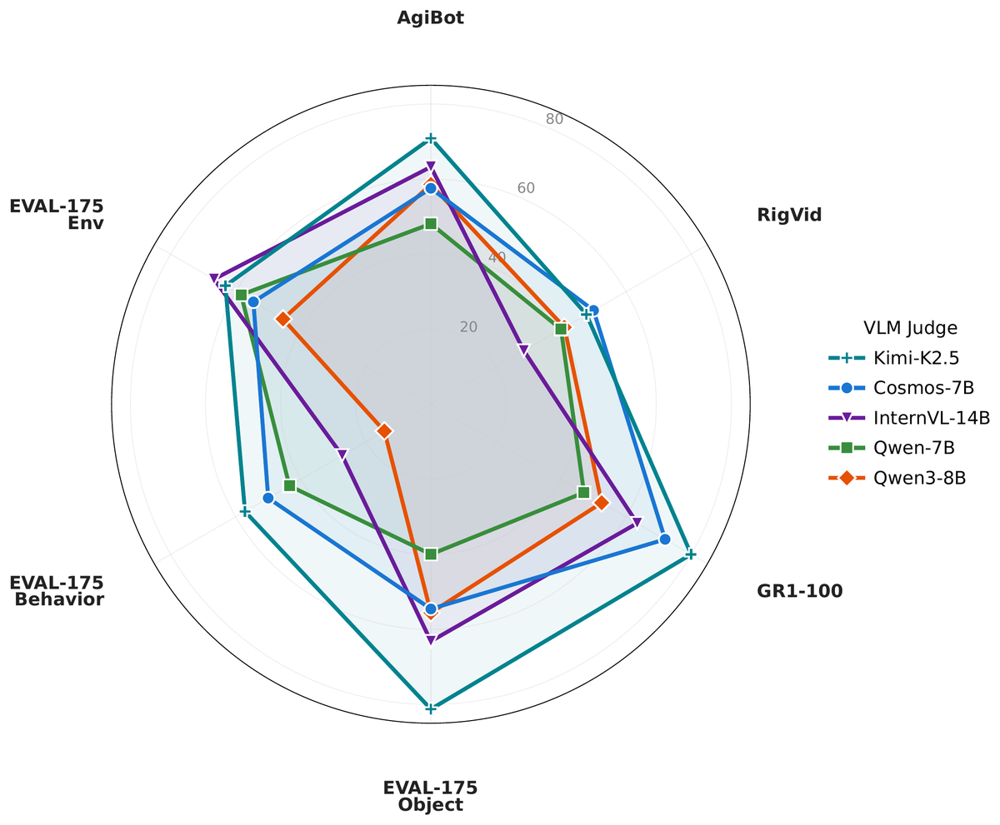
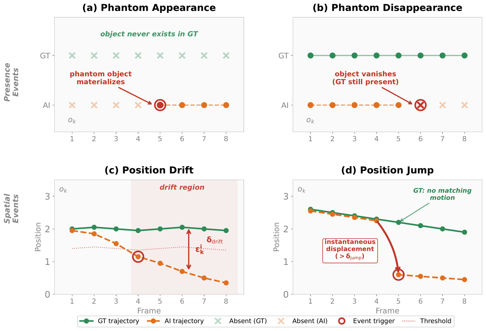
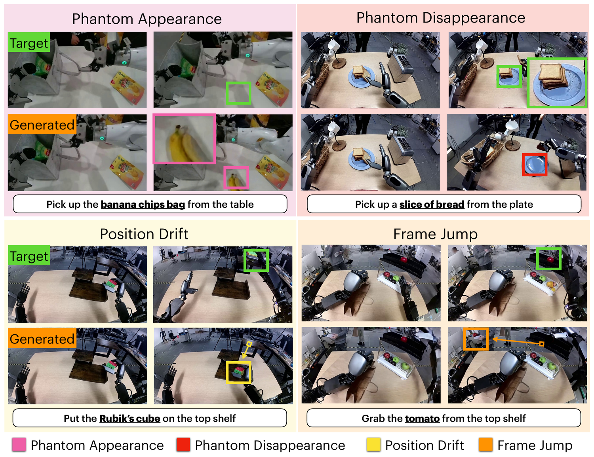
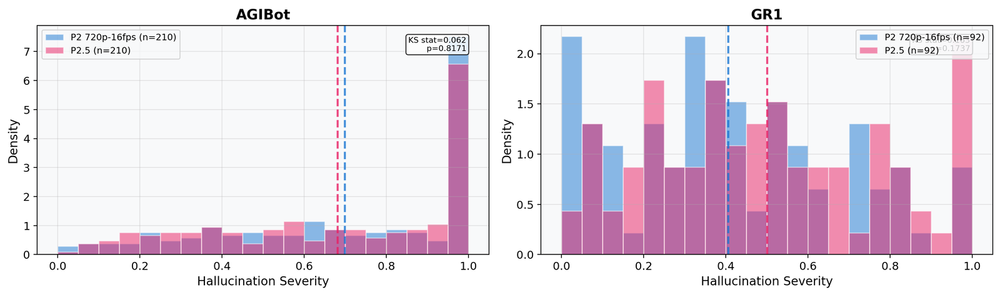
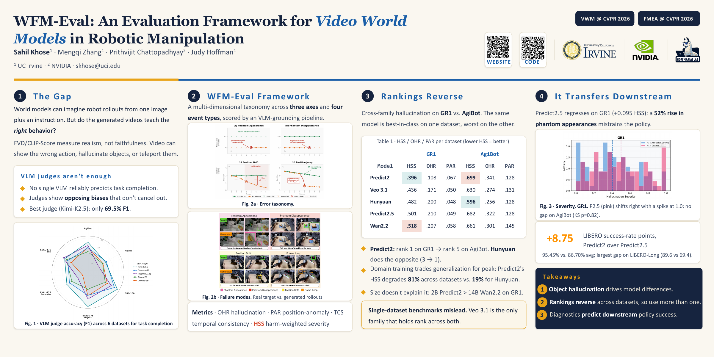

1UC Irvine · 2NVIDIA
Abstract
Video world models can generate synthetic training data for robot manipulation, but standard metrics (FVD, FID) miss the failure modes that determine whether policies trained on that data succeed. VLM-based holistic judges are a natural alternative, but no single VLM reliably predicts task completion: judges exhibit opposing biases that do not cancel under ensembling.
We introduce WFM-Eval, a multi-dimensional evaluation framework that decomposes video quality into three axes (task completion, object hallucination, and temporal consistency) with structured object-level diagnostics that bypass holistic judgment. We benchmark five video world models (Cosmos Predict2, Predict2.5, Veo 3.1, HunyuanVideo 1.5, Wan2.2) on GR1 and AgiBot.
We find that (1) object hallucination is the dominant model-discriminative failure mode, and (2) model rankings reverse between datasets: the GR1 leader is last on AgiBot and the AgiBot leader is mid-pack on GR1, so single-dataset benchmarks mislead. As supporting evidence, the framework’s hallucination ranking aligns with downstream policy success on LIBERO, where Predict2 outperforms Predict2.5 by 8.75 points. We release WFM-Eval as an open toolkit.
Motivation
Background
A video world model can generate a robot rollout from a single image and a language instruction, which makes it an appealing source of training data for manipulation policies. How useful that data is depends on whether the generated video is faithful to what should actually happen. Metrics like FVD and CLIP-Score capture visual realism, but they do not tell us whether the video shows the wrong action, adds objects that were never there, or moves them in ways that never occurred.
Holistic judges
A natural alternative is to ask a vision-language model whether the task succeeded. We find this unreliable: no single VLM predicts task completion well, and different judges carry biases that point in opposite directions, so combining them does not help. The best single judge we tested (Kimi-K2.5) reaches only 69.5% F1, which is too coarse to anchor a benchmark.

The WFM-Eval Framework
WFM-Eval organizes errors into three axes and four event types, and scores them with an automated pipeline that uses VLM grounding for object-level diagnosis rather than a single holistic verdict.
Whether the rollout actually carries out the instructed task, rather than only looking plausible.
Whether objects appear from nothing or disappear partway through the rollout. This is the axis that separates models most clearly.
Whether objects move continuously, or jump between frames in ways that are physically impossible.
Four event types
An object that is not present in the ground truth appears in the generated video.
An object that is present in the ground truth disappears from the rollout before it should.
An object gradually moves away from its ground-truth trajectory over the rollout.
An object jumps to a new location instantly, with no motion connecting the two positions.


Metrics
Key Findings
Across the five families, object hallucination accounts for most of the difference between models. The temporal and realism-based measures vary much less. Standard metrics such as FVD and CLIP-Score do not capture hallucination, so it is easy to miss when models are compared on appearance alone.
Model rankings differ substantially between datasets. Predict2 ranks 1st on GR1 but 5th on AgiBot, while Hunyuan goes the other way, from 3rd on GR1 to 1st on AgiBot. Models trained on a specific domain tend to do well in distribution and worse out of it: Predict2’s HSS degrades by 81% across the two datasets, compared with 19% for Hunyuan. The effect is not explained by model size, since the 2B Predict2 outperforms the 14B Wan2.2 on GR1.
Because of this, evaluating on a single dataset can be misleading. Veo 3.1 is the only family that holds roughly the same rank on both.
| Model | GR1 | AgiBot | ||||
|---|---|---|---|---|---|---|
| HSS | OHR | PAR | HSS | OHR | PAR | |
| Predict2 | .396 | .108 | .067 | .699 | .341 | .128 |
| Veo 3.1 | .436 | .171 | .050 | .630 | .274 | .131 |
| Hunyuan | .482 | .200 | .048 | .596 | .256 | .128 |
| Predict2.5 | .501 | .210 | .049 | .682 | .322 | .128 |
| Wan2.2 | .518 | .207 | .058 | .661 | .301 | .145 |
Green = best per dataset · Red = worst per dataset. Predict2 goes from best on GR1 to worst on AgiBot.
We also checked whether the hallucination ranking corresponds to how well a model works as a policy. We take the pretrained Predict2 and Predict2.5 world models, attach an action head to each, and train them as policies on LIBERO, using the model’s learned representation as the policy backbone.
The Predict2 backbone does noticeably better, by 8.75 success-rate points on average (95.45% vs. 86.70%), with the largest gap on LIBERO-Long (89.6 vs. 69.4). This is consistent with what the framework reports for these two models: Predict2.5 is worse on GR1 (0.095 higher HSS, with about 52% more phantom appearances), and we think this weaker representation is part of why its policy underperforms.

Takeaways
1. Object hallucination is the main differentiator between models.
2. Rankings change across datasets, so models should be evaluated on more than one.
3. The diagnostics track downstream policy performance.
Poster

Click the poster to open the full-resolution PDF. VWM & FMEA @ CVPR 2026.